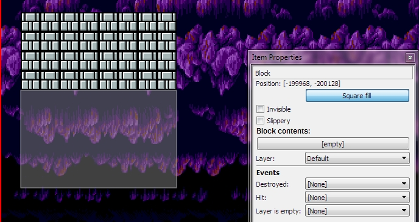

This is a special tool, which can be used for speed place of item group on the map.
This feature available for BGO and Blocks.
For use this feature, you must press on the button "Square fill", and for place item group, you must draw the rectangle on the map and it will be filled with selected item.
Placing block with sqare fill tool

Copyright © 2014 Platforger Game Engine by Wohlstand project. All rights reserved.